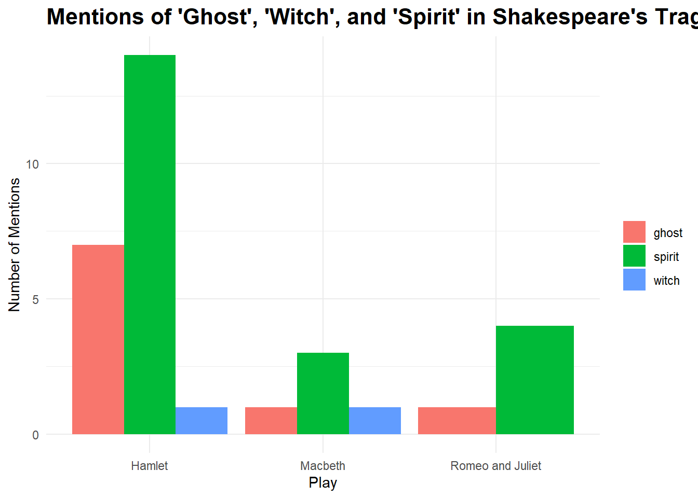
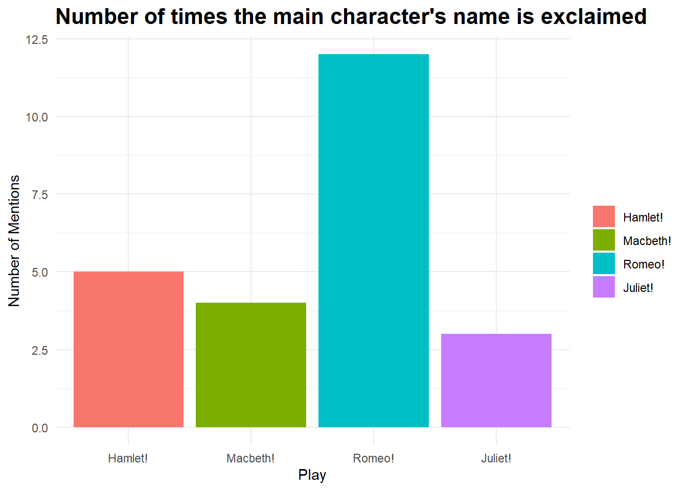
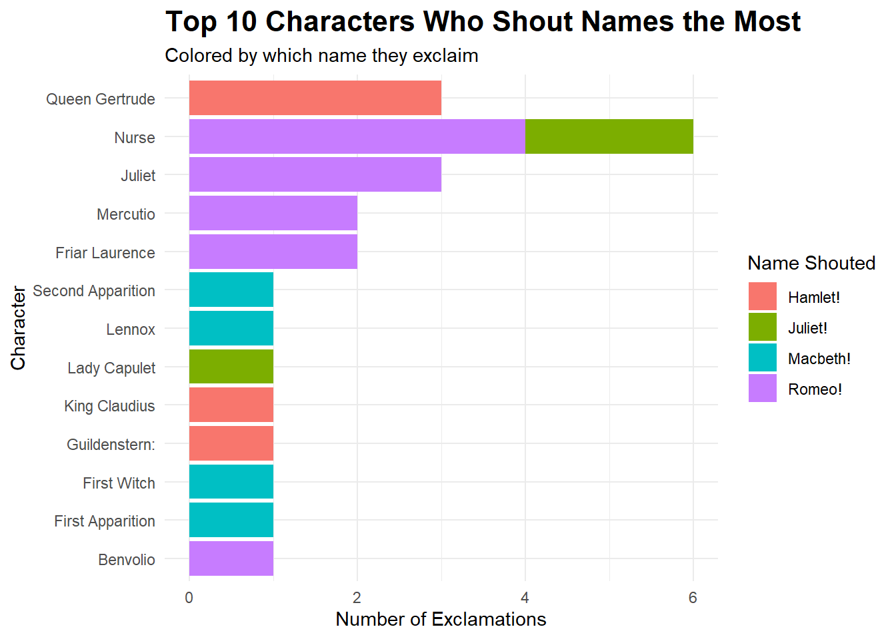
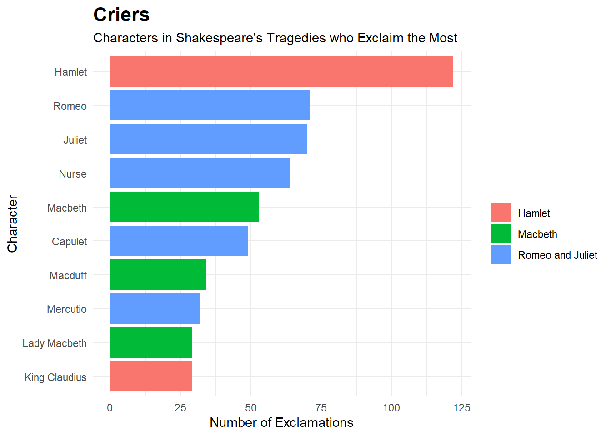
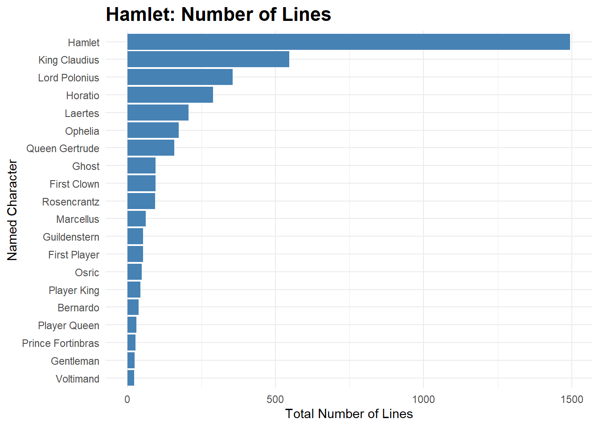
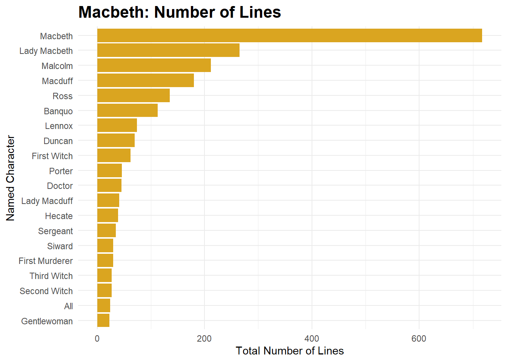

The data from this page comes from Shakespeare’s works, which are in the public domain. The datasets used here pulled their data specifically from https://shakespeare.mit.edu/ and can be found in the TidyTeusday 2024 repository, curated by Nicola Rennie.
tragedies <-bind_rows( hamlet |>mutate(play ="Hamlet"), macbeth |>mutate(play ="Macbeth"), romeo_juliet |>mutate(play ="Romeo and Juliet"))tragedies_ghosts <- tragedies |>filter(str_detect(dialogue, "\\b(ghost|witch|spirit)\\b")) |>select(play, dialogue) |>mutate(supernatural =str_extract(str_to_lower(dialogue), "\\b(ghost|witch|spirit)\\b" )) |>count(play, supernatural, name ="num_mentions")ggplot(tragedies_ghosts, aes(x = play, y = num_mentions, fill = supernatural)) +geom_col(position ="dodge") +labs(title ="Mentions of 'Ghost', 'Witch', and 'Spirit' in Shakespeare's Tragedies",x ="Play",y ="Number of Mentions",fill ="" ) +theme_minimal() +theme(plot.title =element_text(size =16, face ="bold"))

This graph shows that Hamlet has a great deal many more mentions of ghosts, witches, and spirits than the other two plays. This indicates that ghosts, witches, and spirits are more relevant to the plot of Hamlet than to the other two, which makes sense because Hamlet is frequently seeing apparitions of his dead father and this is central to the plot.
Show the code
tragedies_exclaim <- tragedies |>filter(str_detect(dialogue, "(?i)\\bHamlet!+|Macbeth!+|Romeo!+|Juliet!+")) |>mutate(exclamations =str_extract(dialogue, "(?i)\\bHamlet!+|Macbeth!+|Romeo!+|Juliet!+")) |>count(play, exclamations, name ="num_exclaim") |>mutate(exclamations =fct_relevel(exclamations, c("Hamlet!", "Macbeth!", "Romeo!", "Juliet!")))ggplot(tragedies_exclaim, aes(x = exclamations, y = num_exclaim, fill = exclamations)) +geom_col(position ="dodge") +labs(title ="Number of times the main character's name is exclaimed",x ="Play",y ="Number of Mentions",fill ="" ) +theme_minimal() +theme(plot.title =element_text(size =16, face ="bold"))

This graph shows that out of the main characters from each play, Romeo is the one who gets yelled at (or about) the most.
Show the code
tragedies_exclaimers <- tragedies |>filter(str_detect(dialogue, "(?i)\\b(Hamlet|Macbeth|Romeo|Juliet)!+")) |>mutate(exclamations =str_extract(dialogue, "(?i)\\b(Hamlet|Macbeth|Romeo|Juliet)!+"),exclamations =str_to_title(exclamations) ) |>count(play, character, exclamations, name ="num_exclaim") |>arrange(desc(num_exclaim))# Optionally, focus on the top 10 loudest shouterstop_exclaimers <- tragedies_exclaimers |>slice_max(num_exclaim, n =10)ggplot(top_exclaimers, aes(x =reorder(character, num_exclaim),y = num_exclaim,fill = exclamations)) +geom_col() +coord_flip() +labs(title ="Top 10 Characters Who Shout Names the Most",subtitle ="Colored by which name they exclaim",x ="Character",y ="Number of Exclamations",fill ="Name Shouted" ) +theme_minimal() +theme(plot.title =element_text(size =16, face ="bold"))

And this graph shows that not all of those times Romeo is yelled at are from Juliet’s famous line! Turns out Romeo is yelled at (or about) by a good variety of folks.
Show the code
tragedies_exclaimers <- tragedies |>filter(str_detect(dialogue, "(?i)!+")) |>mutate(exclamations =str_extract(dialogue, "(?i)!+"),exclamations =str_to_title(exclamations) ) |>count(play, character, exclamations, name ="num_exclaim") |>arrange(desc(num_exclaim))# Optionally, focus on the top 10 loudest shouterstop_exclaimers <- tragedies_exclaimers |>slice_max(num_exclaim, n =10)ggplot(top_exclaimers, aes(x =reorder(character, num_exclaim),y = num_exclaim,fill = play)) +geom_col(position ="dodge") +coord_flip() +labs(title ="Criers",subtitle ="Characters in Shakespeare's Tragedies who Exclaim the Most",x ="Character",y ="Number of Exclamations",fill ="" ) +theme_minimal() +theme(plot.title =element_text(size =16, face ="bold"))

Finally, this graph tells us that despite not being yelled at nearly as much as Romeo is, Hamlet yells a lot. Perhaps this is because of all of those ghosts, spirits, and witches.
Below is a graph for each play showing who has the most lines. These line counts graphs tell you which character is the “main character”, which, unsurprisingly, are also the title characters. But just in case.
Show the code
hamlet_counts <- hamlet |>filter(!grepl("stage", character, ignore.case =TRUE)) |>count(character, name ="num_lines") |>mutate(play ="Hamlet") |>arrange(desc(num_lines)) |>slice_head(n =20)ggplot(hamlet_counts, aes(x =reorder(character, num_lines), y = num_lines)) +geom_col(fill ="steelblue") +coord_flip() +labs(title ="Hamlet: Number of Lines",x ="Named Character",y ="Total Number of Lines" ) +theme_minimal(base_size =14) +# bigger texttheme(plot.title =element_text(size =18, face ="bold"),axis.text.y =element_text(size =10) ) +theme_minimal() +theme(plot.title =element_text(size =16, face ="bold"))

Show the code
macbeth_counts <- macbeth |>filter(!grepl("stage", character, ignore.case =TRUE)) |>count(character, name ="num_lines") |>mutate(play ="Macbeth") |>arrange(desc(num_lines)) |>slice_head(n =20)ggplot(macbeth_counts, aes(x =reorder(character, num_lines), y = num_lines)) +geom_col(fill ="goldenrod") +coord_flip() +labs(title ="Macbeth: Number of Lines",x ="Named Character",y ="Total Number of Lines" ) +theme_minimal(base_size =14) +# bigger texttheme(plot.title =element_text(size =18, face ="bold"),axis.text.y =element_text(size =10) ) +theme_minimal() +theme(plot.title =element_text(size =16, face ="bold"))

Show the code
romeo_juliet_counts <- romeo_juliet |>filter(!grepl("stage", character, ignore.case =TRUE)) |>count(character, name ="num_lines") |>mutate(play ="Romeo and Juliet") |>arrange(desc(num_lines)) |>slice_head(n =20)ggplot(romeo_juliet_counts, aes(x =reorder(character, num_lines), y = num_lines)) +geom_col(fill ="maroon") +coord_flip() +labs(title ="Romeo and Juliet: Number of Lines",x ="Named Character",y ="Total Number of Lines" ) +theme_minimal(base_size =14) +# bigger texttheme(plot.title =element_text(size =18, face ="bold"),axis.text.y =element_text(size =10) ) +theme_minimal() +theme(plot.title =element_text(size =16, face ="bold"))